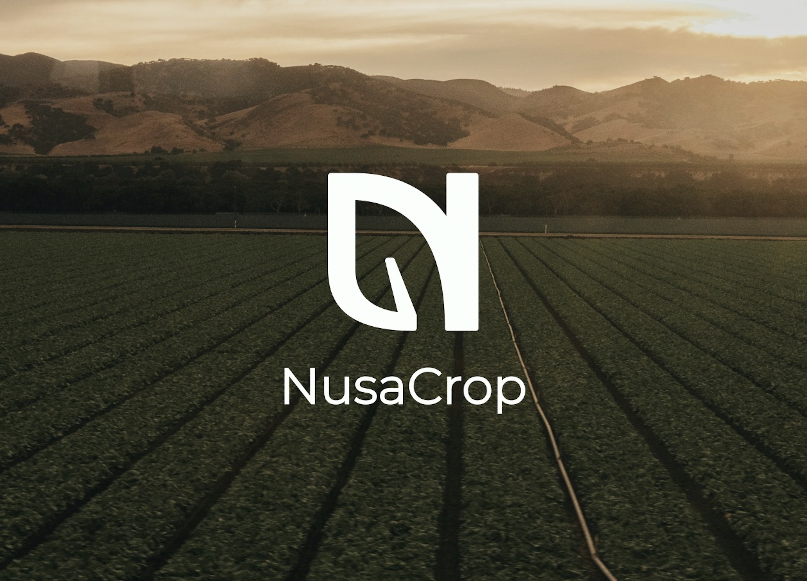

Project Library
A collection of my experiments, research, and applications.

SignLingo AI
A real-time, browser-based sign language recognition engine utilizing MediaPipe Holistic and CNN-LSTM Architecture.

Custom OIDC Provider
A secure, containerized OpenID Connect Identity Provider. Engineered from scratch using Flask and Authlib.

F1 Undercut Predictor
A high-performance motorsport tool predicting strategy viability via Scikit-Learn using FastF1 telemetry data.

AI CV Improver
Uses Bloom-560m and DistilBERT to parse resumes and generate strict ATS-friendly improvements with heuristic scoring.

Intelligent Discord Auto-Moderator
A highly concurrent Python bot leveraging DistilBERT to detect toxicity and spam 24/7 with a 0.94 recall.

Hybrid CNN-LSTM Signature
A formal academic approach to designing a lightweight neural network architecture for Sign Language Recognition on extreme low-resource edge devices constraint by thermal throttling.

Flux Personal Finance Dashboard
A modern, responsive budgeting application offering real-time expense tracking, automated billing logic, and robust Laravel backend architecture.

NusaCrop
An interactive UI prototype and comprehensively planned IoT architecture for urban hydroponic farmers seeking commercial supply chain integration.